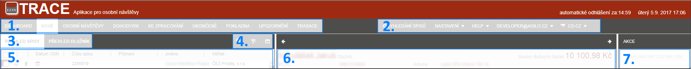

Rozložení obrazovky
Každá záložka je složena z několik základních částí. Tyto části jsou rozděleny podle své funkčnosti.

- Hlavní menu, ve kterém uživatel přepíná mezi základními oblastmi programu (pro celý program je menu stejné).
- Technické menu, ve kterém jsou sdruženy následující funkcionality nepříslušející konkrétním záložkám (pro celý program je menu stejné).
- Menu seznamu - přepínání zobrazení seznamu přes spisy a dlužníky (pro každou záložku je menu různé).
- Ovládací ikony - ikony pro hromadné nastavení GPS souřadnic, Zrušení filtru a zvětšení seznamu na celou obrazovku (pro každou záložku je menu různé).
- Seznam spisů - přehled všech spisů ve vybraném stavu (pro každou záložku je menu různé).
- Detail vybraného spisu - místo pro zobrazování detailu a urgencí spisu (pro každou záložku je menu různé).
- Akční tlačítka - prostor akční menu (pro každou záložku je menu různé).